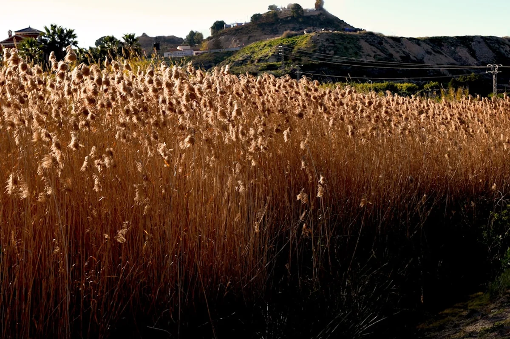
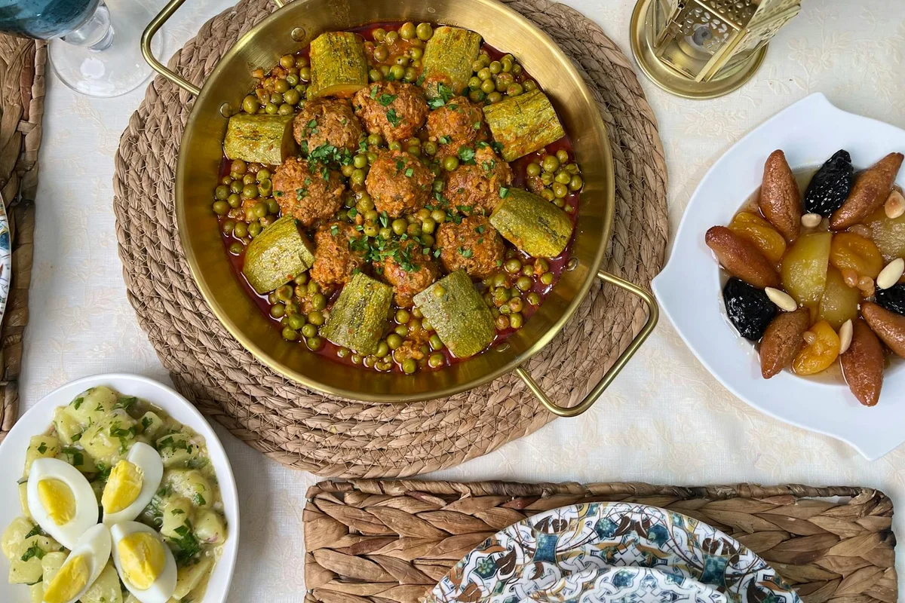

Introduction
There is a particular kind of confidence that comes from feeding a continent for centuries. Murcia huerta seasonal food culture is built on exactly that foundation: a fertile coastal plain that has been irrigated, cultivated, and obsessed over since Moorish engineers first redirected the Segura river sometime around the tenth century. The result is not simply good produce. It is an entire philosophy of eating, organised around what the soil is doing right now rather than what the menu has always offered.
Most travellers breeze through on their way between Alicante and Granada, pausing perhaps for a coffee and a quick look at the cathedral. That is a genuine shame. The murciana table is one of the most coherent and seasonally honest in all of Spain, and 2026 gives it an especially vivid frame: the 175th anniversary of the Bando de la Huerta, the riotous spring festival that turns the city into a living harvest parade. If there was ever a year to take Murcia seriously as a food destination, this is it.
What follows is not a list of tourist-approved restaurants with pleasant patios. It is a real attempt to explain why the huerta produces the way it does, which dishes actually tell that story on the plate, where the people who grow the food go to eat it, and why the 2026 anniversary matters beyond the confetti.
Understanding the Huerta: More Than a Vegetable Garden
The word huerta translates loosely as kitchen garden or market garden, but in Murcia it carries the weight of an identity. The Huerta de Murcia is a roughly 12,000-hectare irrigated plain surrounding the city of Murcia, threaded by a network of irrigation channels called acequias that are still governed by a Tribunal de Aguas whose legal traditions predate the Spanish state itself.
What this means in practice is a microclimate of extraordinary generosity. More than 300 days of sunshine per year, rich alluvial soil deposited by the Segura, and a sophisticated water distribution system allow Murcia to produce crops that other Spanish regions simply cannot. Artichokes, pimientos de bola (round red peppers used for paprika), alcachofas, lettuces, broccoli, lemons, pomegranates, and a staggering variety of tomato are all harvested here at different points in the calendar.
The critical thing to understand is that murcianos do not treat the huerta as a backdrop. They treat it as a clock. Ask a local cook when to eat olla gitana and the answer will not be a month: it will be a description of when the green beans are right and the pumpkin has sweetened. This seasonal attentiveness is the real character of the cuisine, and it is invisible to anyone who only visits once.
The Seasonal Dish Calendar: What to Eat and When
Spring (March to May): This is artichoke season, and in Murcia that is not a minor event. Alcachofas a la murciana, braised with dry white wine, garlic, and jamón, appear on almost every table. Spring also brings michirones, a warming stew of dried broad beans cooked with chorizo, bay, and chilli that local bars serve as a tapa in small clay pots. It is emphatic, slightly rough, and entirely honest.
Summer (June to August): The heat pushes the kitchen towards cold dishes and raw preparations. Zarangollo is the essential summer plate: scrambled eggs cooked low and slow with courgette and onion until they collapse into something silky and sweet. It is served at room temperature, dressed with nothing but good olive oil, and it is the dish that murcianos miss most when they leave the region. Alongside it, the tomato harvest produces a variety of simple salads, among them the iconic ensalada murciana, built from salted tomatoes, roasted peppers, tuna, olives, and hard-boiled egg.
Autumn (September to November): The pomegranate comes into its own, used both in savoury dishes and in the granizado de granada that street stalls sell through October. Autumn is also the moment for olla gitana, a legume and vegetable stew that sounds humble until you taste how the pumpkin, green beans, pears, and saffron collapse together into something almost baroque. No meat, almost no fat, just the accumulated depth of very good vegetables.
Winter (December to February): Caldero murciano comes to the coast, a rice dish cooked in a wide iron pan with fish stock so intense it stains the grains a deep amber. Inland, marinera, a single anchovy placed on a mound of Russian salad on a round cracker, becomes the canonical bar tapa for cold evenings, eaten standing at counters across the city with a glass of Jumilla red.

The 175th Bando de la Huerta: Why 2026 Is a Different Kind of Year
The Bando de la Huerta takes place on the Tuesday after Easter Sunday and is, in essence, a giant costumed parade in which the city dresses as its own countryside. Huertanos (the farming families of the plain) march through the city centre in traditional dress, carrying baskets of produce, riding donkeys, and singing coplas, satirical verses that comment on local politics and city life. The whole city turns out. Stalls sell traditional food. The Segura riverbank fills with people eating zarangollo and drinking agua limón directly from ceramic jugs.
The festival began in 1851, making 2026 its 175th anniversary. This is not a number that Murcia is treating lightly. The city has been presenting the anniversary at major tourism fairs including FITUR 2026 as a central hook for international visitors, and local cultural organisations are planning extended programming around the celebration, including open huerta visits, cooking demonstrations using traditional tools, and evening concerts on the irrigated plain itself.
For a food-focused traveller, the Bando represents something that almost no other Spanish festival offers: a direct, unmediated encounter between the agricultural landscape and the urban table. The produce brought into the city during the parade is real. The recipes demonstrated in the stalls are living recipes. The people wearing the traditional costumes of the huertano often still farm the same land their great-grandparents farmed. It is a form of seasonal theatre that also happens to be true.
One thing the tourist brochures tend to omit: arrive the day before and walk the stalls being set up along the Malecón. The pre-festival evening, with families testing recipes and neighbourhoods competing informally over who makes the better marinera, is frequently more alive than the official day itself.
Where Locals Actually Eat: The Unvarnished List
The standard food guide to Murcia will point you towards the Mercado de Verónicas, which is a genuinely beautiful market and worth visiting, then suggest a handful of restaurants on or near the Plaza de las Flores. All of that is fine. None of it is where the people who actually live here eat with any regularity.
Rincón de Pepe remains the grand institution, a place that has fed everyone from regional politicians to visiting chefs for decades. Order the caldero if the season is right and the cochinillo if you want to understand why murciano pork has its own devoted following.
For something less ceremonial, the real local move is the tapas crawl along Calle de la Trapería and the surrounding streets of the old quarter, where small bars serve two or three things extremely well and nothing else. Pura Cepa is particularly respected for its wine selection and its commitment to seasonal small plates that actually change week to week rather than simply claiming to.
For market eating, most visitors go to Verónicas and stop there. The more interesting move is to cross the Segura and find the smaller neighbourhood markets in districts like El Carmen, where the produce is the same but the audience is entirely local and the vendors will talk to you about the varieties they grow rather than simply selling them.
For a completely non-obvious meal, seek out one of the casas de comidas on the agricultural periphery of the city, particularly towards the villages of Beniaján or Torreagüera. These are informal dining rooms, often attached to farms or cooperatives, that serve a fixed lunch menu built entirely from what was harvested that morning. There is rarely a printed menu. The cook tells you what there is. You eat it. It is frequently the best meal in the region.

The Contrarian Take: Why Murcia's Food Culture Is Structurally Different from the Tapas Capitals
Here is the argument that most food writing about Murcia refuses to make directly: the city's cuisine is not in competition with San Sebastián or Seville, and treating it as an underdog version of those cities is a category error.
Murcia's food culture is fundamentally agrarian rather than urban. Its great dishes were not invented in restaurant kitchens by chefs responding to each other's ideas. They were solved in farmhouses by cooks trying to use what the garden produced this week and not waste it. Zarangollo exists because courgettes arrive in great quantities in summer and eggs are always available. Olla gitana exists because autumn produces pumpkin and green beans simultaneously and saffron is cheap when you grow it yourself. This is food that came from constraint and became culture.
What this means for the traveller is that the quality of a murciano meal is almost entirely dependent on the season. Visit in April and eat everything involving artichokes. Visit in August and order zarangollo and ensalada murciana and nothing that requires the oven. Visit in November and go looking for olla gitana. Ignore the calendar and you will eat well but miss the point entirely.
It also means that the best murciano cooks are not necessarily found in restaurants. The huertano who invites you to eat at his table after showing you the artichoke fields is offering you something that no Michelin-starred kitchen in Spain can replicate, not because of technique but because of context. The food tastes the way it does because of where you are sitting and what was growing outside twenty minutes ago.
This is the thing that 175 years of Bando de la Huerta has been trying to say to the city every spring: the countryside is not decoration. It is the reason.
Final Thoughts
Murcia will not dazzle you with skyline bars or a celebrity chef scene. What it offers is rarer and, for anyone genuinely interested in food culture, considerably more interesting: a direct, living connection between a specific piece of agricultural land and the dishes that land produces. That connection has been maintained for a very long time, and in 2026 it celebrates a milestone that deserves more attention than it will probably receive from the international press.
If the timing works, plan around the Bando de la Huerta anniversary in spring 2026. Arrive a day early, walk the Malecón, eat michirones at a standing bar, and try to get out to one of the huerta villages for lunch the following day. If spring is not possible, any season rewards the attentive visitor who asks what is ready now rather than what is always available.
For more on Spain's less-celebrated food regions and the seasonal rhythms that drive them, explore the rest of the Tu Giuru archive. The table is always set somewhere interesting.
Frequently Asked Questions
When is the best time to visit Murcia for food tourism?
Every season has its argument, but spring (March to May) is particularly rewarding because artichoke season, the Bando de la Huerta festival, and mild temperatures all coincide. Autumn is a close second for the pomegranate harvest and the olla gitana season. The key is to align your visit with what the huerta is actually producing rather than arriving with a fixed list of dishes in mind.
What is the Bando de la Huerta and why does the 175th anniversary matter?
The Bando de la Huerta is Murcia's great spring festival, held on the Tuesday after Easter Sunday since 1851. It is a costumed parade in which the city celebrates its agricultural identity: huertanos march with produce, traditional recipes are cooked in the streets, and satirical verses comment on city life. The 175th anniversary in 2026 is prompting expanded programming including open farm visits and cultural events on the huerta plain itself, making it a particularly compelling year to attend.
What are the essential dishes of Murcia's huerta cuisine?
The canonical list includes zarangollo (slow-scrambled eggs with courgette and onion), ensalada murciana (tomatoes, roasted peppers, tuna and olives), olla gitana (a vegetable and legume stew with pumpkin and saffron), michirones (spiced dried broad bean stew), and caldero murciano (coastal rice cooked in intense fish stock). Each dish is strongly seasonal and tastes noticeably different depending on when in the year you eat it.
Is Murcia worth visiting just for the food?
Entirely. Murcia is one of the most coherent and seasonally honest food cultures in Spain, built on an agricultural tradition that goes back to Moorish irrigation engineering in the tenth century. For travellers interested in where food actually comes from and how it connects to a specific landscape, Murcia offers something that the better-known tapas cities simply do not: a living, visible relationship between the land and the table.
Where should a first-time visitor eat in Murcia?
Start with a morning visit to the Mercado de Verónicas to understand what is in season. For lunch, either Rincón de Pepe for a full sit-down experience or the tapas bars along Calle de la Trapería for a more local rhythm. For the most authentic experience, make the effort to visit one of the informal casas de comidas in the huerta villages east of the city, such as those around Beniaján or Torreagüera, where the menu is whatever was harvested that morning.